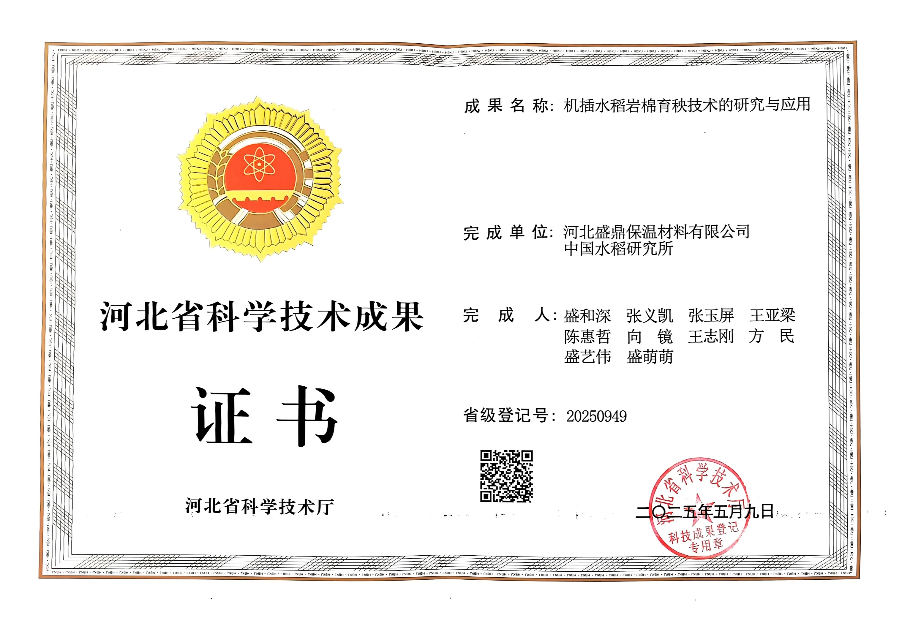
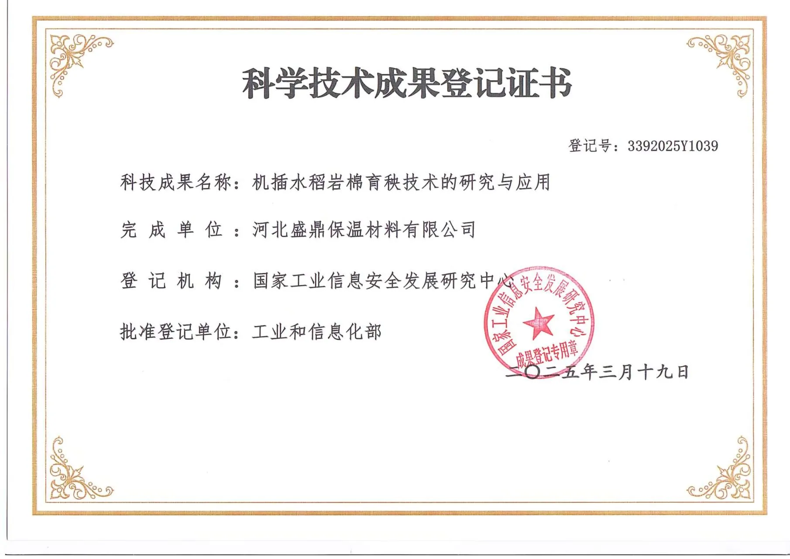
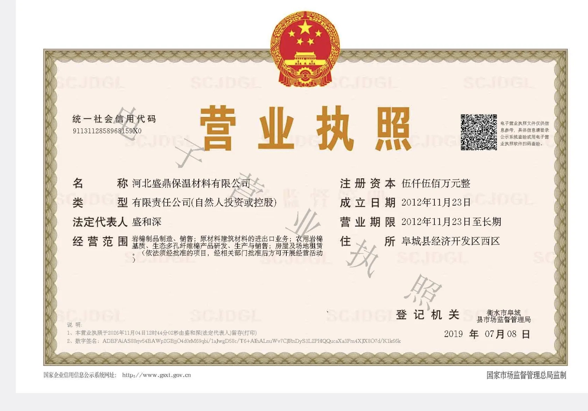

Standards & IP
Three granted invention patents, two provincial and national achievement registrations, four complete technical protocols and one seven-party industry-academia agreement. Every item carries a number that can be verified independently; fields without a number are left empty rather than filled by inference.
Granted invention patents
| Title | Patent no. | Certificate | Publication | Granted |
|---|---|---|---|---|
| Rockwool substrate for seedling propagation and its preparation | ZL 2021 1 0621707.4 | Cert. No. 6399938 | CN 113951092 B | 2023-10-13 |
| Rockwool substrate for cultivation and its preparation | ZL 2021 1 0620521.7 | Cert. No. 5850856 | CN 113841584 B | 2023-04-07 |
| Inorganic fibre substrate for desertification control and its preparation | ZL 2024 1 0839951.1 | Cert. No. 8546783 | CN 118661615 B | 2025-12-05 |
Achievement registrations
Achievement: rockwool seedling technology for machine-transplanted rice.
| Level | Registration | Issuing body | Date | Completion role |
|---|---|---|---|---|
| Provincial | 20250949 | Hebei S&T Department | 2025-05-09 | Company as first completion unit |
| National | 3392025Y1039 | MIIT | 2025-03-19 | Company as first completion unit |



Complete technical protocols
Protocols are split by crop and stage; clause numbers map directly to field operations.
Technical protocol for intensive rockwool seedling propagation
12 ch. · 2 app. · 12 tables
Technical protocol for inorganic-fibre rockwool growing media
14 ch. · 3 app. · 17 tables
Technical protocol for inorganic-fibre strawberry propagation and cultivation
16 ch. · 4 app. · 21 tables
Technical protocol for inorganic-fibre rice seedling media and machine transplanting
Compiled; release planned for 2027
Beijing-Tianjin-Hebei joint trial and demonstration agreement
Signed 2025-05-25 · valid to 2030-05-25 · 7 parties
- Institute of Vegetables and Flowers, CAAS
- College of Horticulture, China Agricultural University
- Institute of Vegetable Research, BAAFS
- Institute of Vegetable Research, TAAS
- College of Horticulture, Hebei Agricultural University
- Institute of Cash Crops, HAAFS
7th batch of Hebei Provincial Managed Outstanding Experts
Cert. No. 20140158 · 2014-11-07
06 / Quality system
- ISO 9001Quality management system certified
- Tax creditA
- Registered capitalCNY 55M, fully paid
A frequent confusion: agricultural and building rockwool are not the same standard system
GB/T 11835, GB/T 19686 and GB/T 25975 all fall within the building thermal insulation standard system and cannot serve as acceptance criteria for propagation or growing media. The technical basis for agri-media is the protocol set and achievement registrations listed on this page. Conflating the two is a common misstatement in this industry; we state the distinction on our own site first.
All numbers on this page are drawn from public registration records. Fields without a number are left blank rather than inferred. To verify originals, email us with the intended use; we provide the documents that may be disclosed.